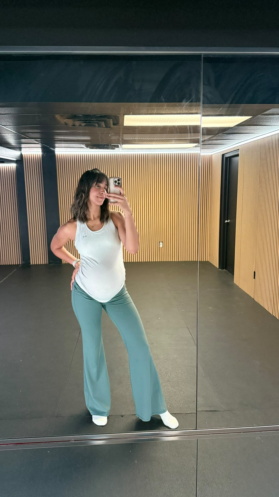
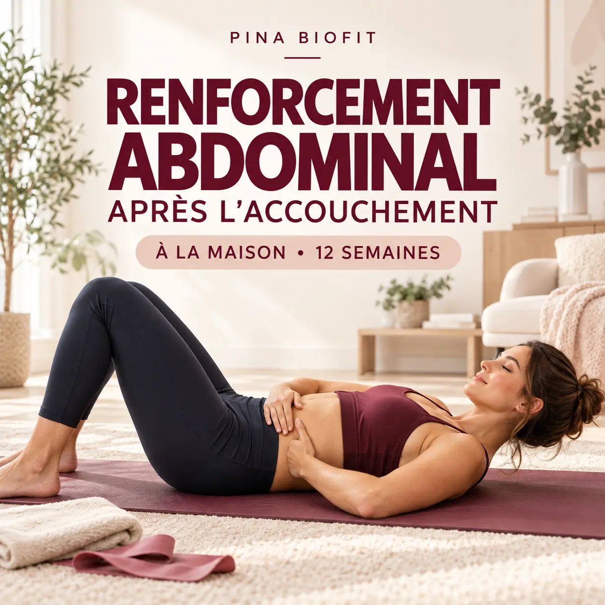
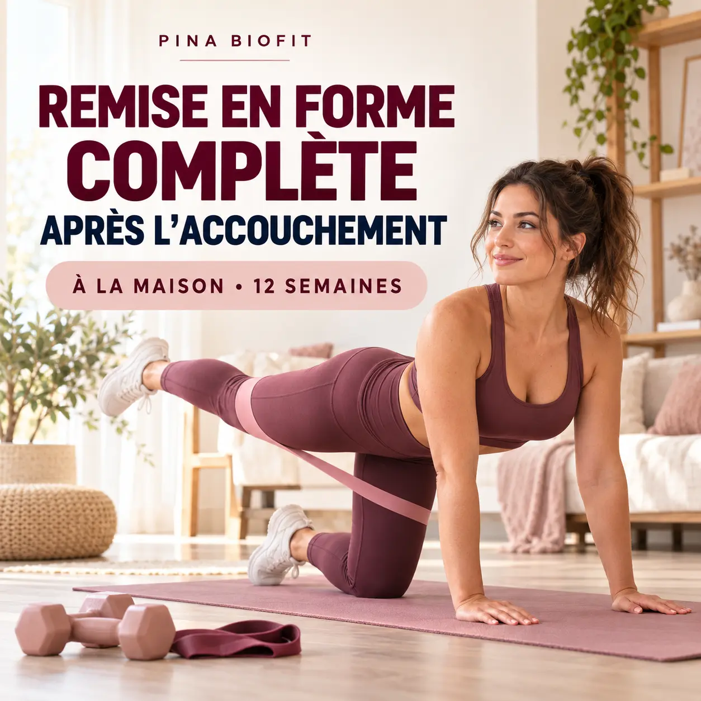
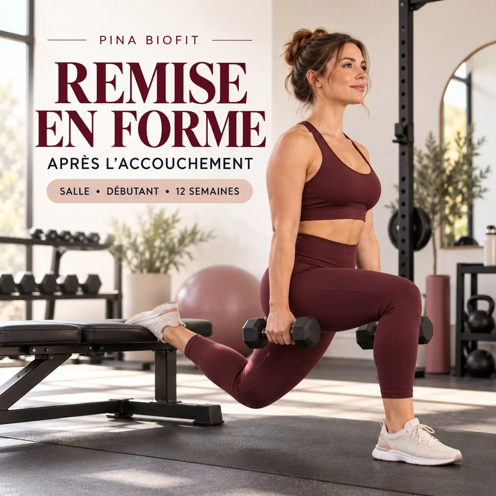
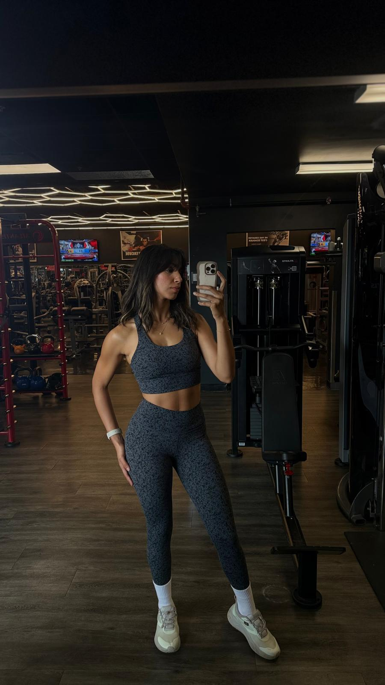

Tu ne reconnais plus ton ventre
La sensation de faiblesse ou le ventre qui forme un dôme ne se règle pas simplement en faisant plus d’abdominaux.
Programmes post-partum guidés · 12 semaines
Des programmes progressifs pensés pour les mamans après l’accouchement : respiration, plancher pelvien, abdominaux profonds et renforcement complet, à la maison ou en salle.

Ton corps ne doit pas être brusqué
Après une grossesse, le corps a besoin d’une stratégie différente : comprendre la pression abdominale, retrouver la coordination du centre et reconstruire une base avant d’augmenter l’intensité.
La sensation de faiblesse ou le ventre qui forme un dôme ne se règle pas simplement en faisant plus d’abdominaux.
Tu as besoin de séances structurées, faciles à suivre et compatibles avec la réalité d’une maman.
Les démonstrations, consignes de respiration et progressions t’aident à reprendre avec plus de confiance.
Pas seulement « perdre du poids » : te sentir stable, solide, capable et bien dans ton corps.
Comprendre avant de renforcer
Pendant la grossesse, l’utérus grandit et la paroi abdominale s’adapte. Les muscles ne « cassent » pas : ils s’écartent pendant que le tissu qui les relie s’allonge pour créer de l’espace.
Après l’accouchement, les tissus récupèrent progressivement. La respiration, le plancher pelvien et les abdominaux profonds doivent aussi réapprendre à travailler ensemble pour gérer la pression créée lorsque tu te lèves, portes ton bébé ou t’entraînes.
Un ventre qui forme une pointe ou un dôme pendant un mouvement peut indiquer que la pression est mal répartie. C’est un signal pour ajuster la respiration, l’amplitude ou la difficulté — pas une raison d’abandonner l’entraînement.
Auto-évaluation simple
Ce test donne un repère, mais ne remplace pas l’évaluation d’une physiothérapeute en rééducation périnéale et pelvienne.
Allonge-toi sur le dos, genoux pliés et pieds à plat. Relâche le ventre.
Pose le bout des doigts sur la ligne médiane : au niveau du nombril, puis quelques centimètres au-dessus et en dessous.
En expirant, décolle doucement la tête et les épaules comme au début d’un redressement assis.
Note la largeur, la profondeur, la fermeté du tissu sous tes doigts et la présence éventuelle d’un dôme. Ne répète pas le test tous les jours.
Une progression, pas une solution magique
Le tissu peut évoluer naturellement avec le temps. L’entraînement sert surtout à améliorer la coordination, la tension, la force et la gestion de la pression pour que ton corps fonctionne mieux.
Réapprendre à laisser les côtes, le dos et l’abdomen bouger ensemble, sans pousser constamment vers l’avant.
Coordonner l’expiration avec une activation adaptée, puis savoir relâcher. Plus serrer n’est pas toujours mieux.
Expirer pendant l’effort, ajuster la charge et modifier un mouvement si le ventre bombe ou si des symptômes apparaissent.
Passer des mouvements simples aux exercices complets, puis augmenter graduellement la résistance selon le contrôle.
L’objectif n’est pas de « fermer » le ventre à tout prix. C’est de retrouver un centre capable de créer de la tension, de transférer la force et de soutenir tes mouvements sans symptômes.
Quatre parcours · un même objectif
Commence par la base si tu reprends après l’accouchement. Tu pourras ensuite évoluer vers un programme complet ou vers la salle.

Un parcours progressif pour réactiver les abdominaux profonds, améliorer la respiration, renforcer le plancher pelvien et retrouver un centre plus stable.

Respiration, plancher pelvien, renforcement abdominal et exercices pour tout le corps afin de retrouver progressivement force, stabilité et confiance.

Une reprise structurée et rassurante en salle combinant stabilité, renforcement abdominal et exercices pour tout le corps adaptés aux débutantes.
Un plan avancé axé sur les fessiers, les jambes, le haut du corps, la ceinture abdominale et le cardio, réparti sur cinq entraînements.
| Programme | Lieu | Niveau | Fréquence | Idéal pour | Prix |
|---|---|---|---|---|---|
| Renforcement abdominal | Maison | Débutant | Progressive | Reconstruire les bases | 29 $ US |
| Remise en forme complète | Maison | Débutant | Structurée | Core + corps complet | 39 $ US |
| Remise en forme — Salle | Salle | Débutant | 3×/semaine | Reprendre la salle | 49 $ US |
| Renforcement complet — Salle | Salle | Avancé | 5×/semaine | Développer force et physique | 59 $ US |

Le mot de Fedoua
Je t’aide à comprendre ton corps actuel, à reconstruire ses fondations et à retrouver ta force sans brûler les étapes. J’ai moi-même vécu la grossesse, le diastasis et la reprise progressive.
Ma méthode combine les principes du coaching pré et postnatal avec mon expérience de la musculation. Chaque progression vise une meilleure qualité de mouvement — pas la performance à tout prix.
Questions fréquentes
Le moment dépend de ton accouchement, de ta récupération et de tes symptômes. Les mouvements doux peuvent souvent reprendre graduellement lorsque tu te sens prête, mais demande l’avis de ton professionnel de santé avant un programme structuré, particulièrement après une césarienne, des complications ou si tu as des douleurs.
Non. Aucun programme sérieux ne peut garantir une « fermeture » complète. L’objectif est d’améliorer la tension, le contrôle, la force et la gestion de la pression. La largeur peut diminuer, mais la fonction du centre est tout aussi importante.
Réduis l’intensité ou l’amplitude, ralentis le mouvement et concentre-toi sur l’expiration pendant l’effort. Si le bombement persiste ou s’accompagne de symptômes, une physiothérapeute en rééducation périnéale et pelvienne pourra t’évaluer.
Commence par « Renforcement abdominal après l’accouchement — Maison ». Si tu veux aussi entraîner tout le corps, choisis la remise en forme complète à la maison. Le programme salle débutant convient si tu as déjà accès à une salle et souhaites trois séances structurées par semaine.
Non. Ils offrent un cadre d’entraînement général et éducatif. Ils ne diagnostiquent ni ne traitent une condition médicale et ne remplacent pas une évaluation individuelle.
Après l’achat, tu accèdes à l’application Pina BioFit sur téléphone ou ordinateur. Tu y retrouves tes séances, les démonstrations vidéo et le suivi de ta progression.
Choisis le parcours qui correspond à ton niveau, ton environnement et le temps que tu peux réellement consacrer à toi.
Voir les programmes